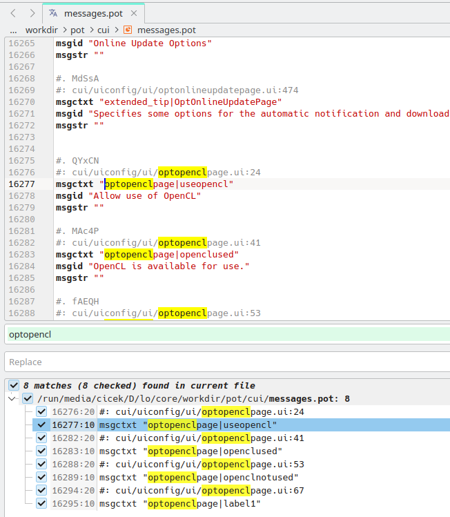
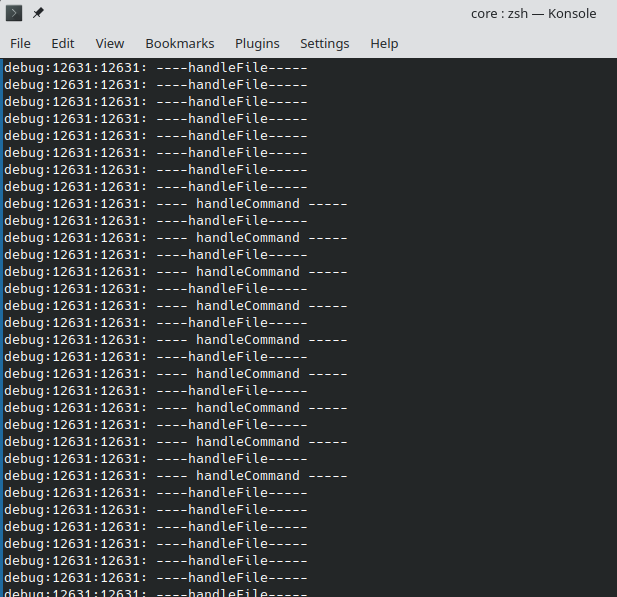

Week #3 - GSoC 2023 Weekly Report - Search Field in Options
Project Report for Week #3
- The Problem in Options sub-dialogs
I’ve been working with Options dialog which has more than 30 sub-dialogs. On the left pane of the Options dialog, the TreeView headers and their sub-headers were included in searching. There is no problem here. However, when it comes to adding all sub-dialogs’ labels, accessible-names, accessible-descriptions and tooltip-texts to the searching, there is a problem arise: When Options dialog opens, it does not initialize all dialogs so it is NOT possible to access their methods - until they were clicked manually.
I asked about this problem on IRC #libreoffice-dev channel:
[11:26:53 AM] <bayramcicek> Hi. Is it possible to fetch all strings(labels), tooltip-texts and accessible-descriptions for a .ui file without initializing its class/ctor? [11:30:35 AM] <caolanm> bayramcicek, might need more context. We do extract those at build-time for translation purposes for example, but that might not be useful for your case [11:33:37 AM] <caolanm> solenv/bin/uiex is that thing [11:33:53 AM] <bayramcicek> caolanm: I'm trying to add search functionality to `Tools > Options` dialog. Options dialog has a lot of sub-dialogs. I need to get all strings(labels), tooltip-texts and accessible-descriptions in each dialog to include them in search function. I think I should write a method for every single dialog to get all strings/desc/tooltips they contain. Is there a better way/approach to do this? [11:34:45 AM] <caolanm> options dialog is a super-duper pain, cause the various contents of that don't exist until created on-demand when you switch to the page [11:38:19 AM] <bayramcicek> Exactly. When Options dialog opens, it does not initialize all dialogs so I couldn't access their methods until I click them manually. [11:40:01 AM] <caolanm> its also what that dialog is (uniquely) one that has a fixed size and doesn't adapt to its contents if there is a page that is too large [11:43:49 AM] <bayramcicek> caolanm: "solenv/bin/uiex is that thing" -> thanks. I'll check that. [11:57:36 AM] <caolanm> bayramcicek, yeah, there might be some use in a build-time approach to attempt to build the index of data you need during the build, rather than at runtime.
It is not possible to access all sub-dialogs when Options dialog opens. We can only have access to their pageIDs and pageNames(headers), but we can’t access their methods since they aren’t instantiated. Otherwise, fetching the all data we need would be very easy with a method implemented by all dialogs - something like pPageInfo->m_xPage->getAllTooltips() etc..
Initializing all dialogs when Options dialog opens is another idea. But this is not a good idea since it takes long to create/initialize all sub-dialogs.
- About
./solenv/bin/uiexscript
In ./core directory; e.g. for optopenclpage.ui file, running
$ ./solenv/bin/uiex -i ./cui/uiconfig/ui/optopenclpage.ui -o output.txt
extracts:
---
#. QYxCN
#: ../cui/uiconfig/ui/optopenclpage.ui:24
msgctxt "optopenclpage|useopencl"
msgid "Allow use of OpenCL"
msgstr ""
#. MAc4P
#: ../cui/uiconfig/ui/optopenclpage.ui:41
msgctxt "optopenclpage|openclused"
msgid "OpenCL is available for use."
msgstr ""
#. fAEQH
#: ../cui/uiconfig/ui/optopenclpage.ui:53
msgctxt "optopenclpage|openclnotused"
msgid "OpenCL is not used."
msgstr ""
#. xWE5i
#: ../cui/uiconfig/ui/optopenclpage.ui:67
msgctxt "optopenclpage|label1"
msgid "OpenCL Options"
msgstr ""
---As far as I understand, the ./solenv/bin/uiex script extracts all strings that have
<... translatable="yes" ... >
property. This also extracts all label, accessible-name, accessible-description and tooltip-text values which are the exact data we need. But this happens only running ./solenv/bin/uiex script. We need the data at build-time.
- Extracting the data at build-time
The extraction happens when running $ make translations. $ make doesn’t extract the data. (or - does it ?)
$ make translations extracts the all information from the following file extensions. (imho, probably this is why it takes longer than expected - on my computer it took 1 min 56 secs.)
static Command const commands[] = {
{ std::u16string_view(u".hrc"), "hrcex", false },
{ std::u16string_view(u".ulf"), "ulfex", false },
{ std::u16string_view(u".xcu"), "cfgex", false },
{ std::u16string_view(u".xrm"), "xrmex", false },
{ std::u16string_view(u"description.xml"), "xrmex", true },
{ std::u16string_view(u".xhp"), "helpex", false },
{ std::u16string_view(u".properties"), "propex", false },
{ std::u16string_view(u".ui"), "uiex", false },
{ std::u16string_view(u".tree"), "treex", false }
};$ make translations extracts all strings into ./workdir/pot/* directory.
Extraction happens in handleFile(...) function at ./l10ntools/source/localize.cxx (https://opengrok.libreoffice.org/xref/core/l10ntools/source/localize.cxx?r=eaf07139#189)
The extracted file ./workdir/pot/cui/messages.pot includes all strings for .ui files that inside ./cui/*. But messages.pot also has strings that unnecessary for our case.
I imagine a script similar to ./solenv/bin/uiex that extracts all .ui files that Options dialog has, into a file (xml or txt etc. ?), during $ make. Then we can retrieve the data into a vector and use it at run-time (maybe - when options dialog opens ?).
./workdir/pot/cui/messages.pot file:

Debug messages after $ make translations:

Summary
- There is a problem with accessing methods of sub-dialogs in Options dialog. (the reason is that the sub-dialogs don’t exist until the page is switched)
- We decided that strings in all
.uifiles will be generated at build-time. (which will be the most challenging part in this project) - I’ll be trying to generate the data at build-time in the following weeks.
***
Steps for implementing search functionality in “Tools > Options”:
| 1) Add Search field to “Tools > Options” dialog. | DONE - week #1 | |
| 2) Include Options treeview into searching. | DONE - week #1 | |
| 3) Include Sub-tree elements (child nodes) into searching. | DONE - week #2 | |
| 4) Generate all strings(labels), accessible-names, accessible-descriptions and tooltip-texts of all .ui files in ./cui/* directory, at build-time. | Next step (most challenging part) | |
| 5) Fetch the generated data - at run-time. | ... | |
| 6) Include strings(labels), accessible-names, accessible-descriptions and tooltip-texts into searching. | ... | |
| 7) Implement highlighting feature - if enough time remains. | ... | |
| ... | ... | |
***
Patch: https://gerrit.libreoffice.org/c/core/+/152519
Project Mentors: Andreas Heinisch and Heiko Tietze (Thanks for their time and guidance)
GSoC project page: https://summerofcode.withgoogle.com/programs/2023/projects/IKtSHIH1
Enhancement request on Bugzilla: https://bugs.documentfoundation.org/show_bug.cgi?id=49895